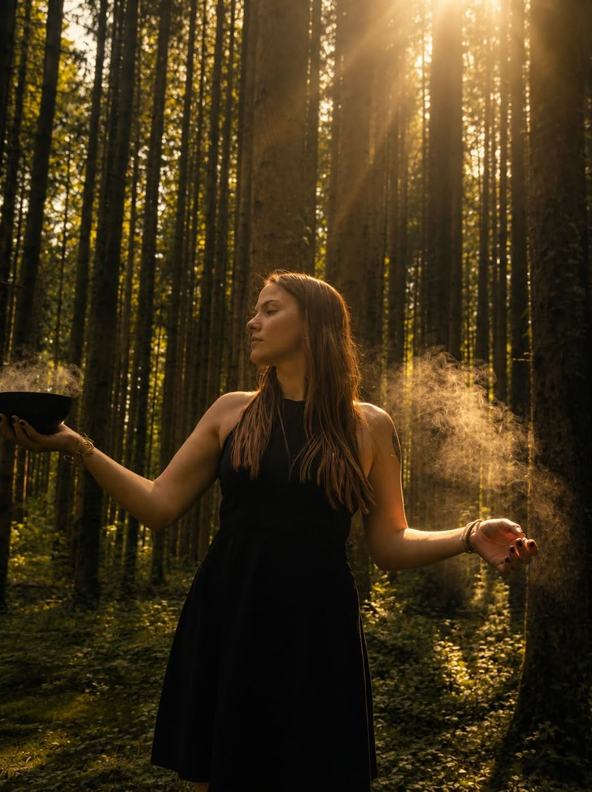
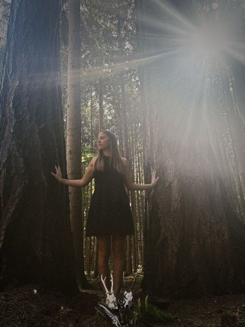
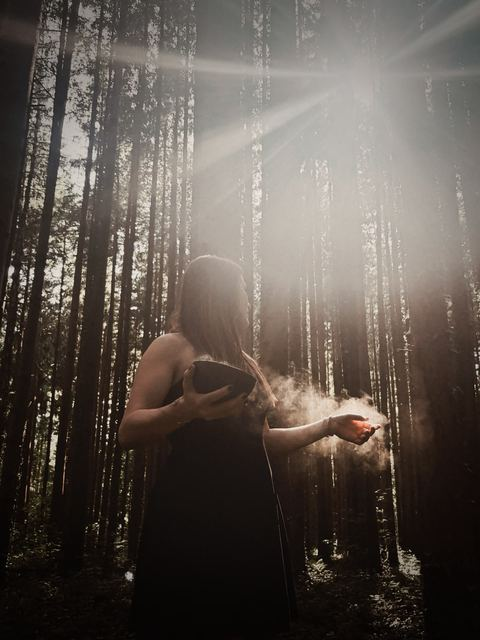
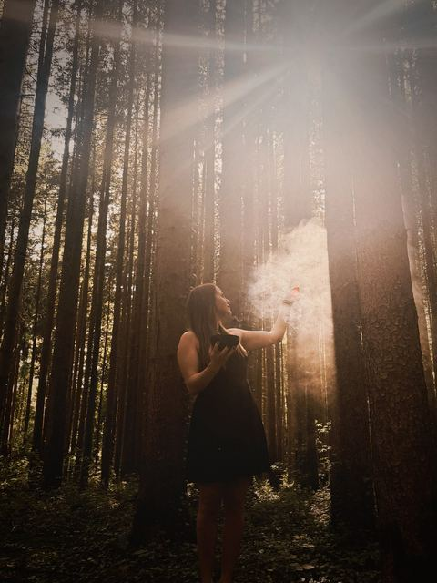

Astrologie
Dein Geburtsbild als innere Landkarte — es zeigt Anlagen, Rhythmen und Themen, die dich ausmachen, und wo gerade Bewegung möglich ist.
✦
Kosmische & naturverbundene Wegbegleitung
Ich begleite dich mit Astrologie, medialer Arbeit und Tarot zurück zu deinen eigenen Ressourcen — damit du auch herausfordernden Zeiten in deiner vollen Würde begegnest.
Wie oben, so unten ✦ wie innen, so außen.
As above, so below · as within, so withoutÜber mich
„Ich habe gelernt, dass wir mitten im Schweren aufrecht bleiben können — weil wir alles in uns tragen, was wir dafür brauchen.“
Mein Weg begann nicht mit einem Plan, sondern mit einer Erschütterung: der Krankheit meines Vaters. In dieser Zeit habe ich gespürt, wie viel Kraft, Klarheit und Würde selbst dann in uns lebendig bleiben, wenn alles ins Wanken gerät — sobald wir wieder in Kontakt mit ihnen kommen.
Heute begleite ich Menschen mit Astrologie, medialer Arbeit und Tarot dabei, genau diese inneren Ressourcen wiederzufinden. Es ist eine Herzenssache für mich: Ich möchte, dass du erlebst, wie viel Tragfähigkeit schon in dir angelegt ist — ganz individuell auf deine eigene Seelensignatur bezogen.
Anna
So arbeite ich →Was in dir wirkt
Egal wie herausfordernd das Leben gerade ist — die Kräfte, die dich tragen, sind schon da. Gemeinsam schauen wir hin, wecken sie und weiten den Raum, in dem du dir selbst begegnest.
Du entdeckst neu, wie viel Kraft, Kreativität und Resilienz längst in dir wohnen.
Schritt für Schritt entsteht mehr innerer Raum für das, was das Leben dir bringt.
Auch schwere Zeiten dürfen sein — du begegnest ihnen aus deiner eigenen Stärke heraus.
Meine Werkzeuge
Astrologie, mediale Arbeit und Tarot sind für mich keine Wahrsagerei, sondern Landkarten — sie helfen uns, das zu lesen, was in dir ohnehin schon bereit ist.
Dein Geburtsbild als innere Landkarte — es zeigt Anlagen, Rhythmen und Themen, die dich ausmachen, und wo gerade Bewegung möglich ist.
✦Ein feines Hinhören auf das, was zwischen den Zeilen deiner Seele liegt — und dich sanft in Kontakt mit deiner eigenen Intuition bringt.
✦Bilder, die Bewegung in eine Frage bringen — sie spiegeln, was du im Grunde weißt, und zeigen dir einen klaren nächsten Schritt.
✦Impressionen



So läuft es ab
Kein Druck, kein Verkaufsgespräch — nur ein achtsamer Weg, der sich für dich stimmig anfühlen darf.
Schreib mir in ein paar Sätzen, was dich gerade bewegt. Ich lese jede Nachricht selbst und melde mich persönlich zurück.
In einem kurzen, kostenlosen Gespräch spüren wir gemeinsam, ob es passt — und welches Werkzeug für dein Thema das richtige ist.
Wir nehmen uns Zeit für dein Anliegen. Du gehst mit einem klaren, tragenden Impuls für deinen nächsten Schritt.
Angebote
Jede Begleitung ist individuell — wir schauen gemeinsam, was dein Thema gerade braucht.
Eine individuelle Session ganz auf dein Thema. Mit Astrologie, medialer Arbeit oder Tarot schauen wir gemeinsam hin — und du gehst mit einem klaren, tragenden Impuls für deinen nächsten Schritt.
Termine nach Absprache · online & in der Natur
Session anfragen →Mein größter Traum für diesen Ort: ein geschützter Bereich mit Video-Impulsen zu ausgewählten Themen — in deinem eigenen Tempo, wann immer du sie brauchst.
Stimmen
Anna hat mir geholfen, wieder Vertrauen in meine eigene Kraft zu finden. Ich bin ruhiger und klarer aus unserer Session gegangen, als ich gekommen bin.
Es war kein Vorhersagen, sondern ein Erinnern. Ich habe gespürt, dass ich vieles längst in mir trage — ich hatte es nur vergessen.
Echte Stimmen folgen, sobald die ersten Begleitungen abgeschlossen sind
Blog · in Vorbereitung
Hier teile ich künftig regelmäßig Texte über Astrologie, innere Ressourcen und das Leben im Rhythmus der Natur — samt Newsletter, damit du nichts verpasst.
Kontakt
Schreib mir in ein paar Sätzen, worum es bei dir gerade geht — ich melde mich persönlich bei dir zurück. Kein Druck, kein Verkaufsgespräch.
Wenn du magst, lass uns kurz kennenlernen — ganz unverbindlich. Wir spüren gemeinsam, ob es sich stimmig anfühlt, und du entscheidest in aller Ruhe, wie es weitergeht.
Termin aussuchenÖffnet den Kalender in einem neuen Tab — du suchst dir einfach einen freien Termin aus. Diese Seite bleibt komplett cookiefrei.